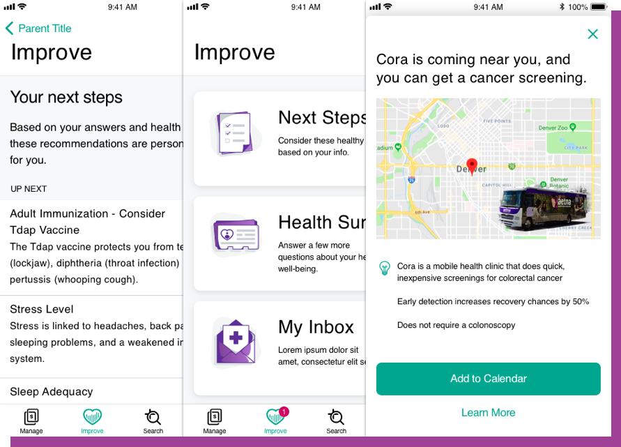

Aetna Health: Cancer Screenings Flow
As a UI Design intern, I worked with a multidisciplinary team of interns to research and design user flows, UI mockups, and prototypes to inform Aetna Health users of cancer screening options with a focus on health equity.
Read Case Study

Amora: Team Task Tracker
As a software engineering class project, I worked with a group of 5 CS majors to build this team task tracker. My role involved using the UX design process to design and build the user interface of the web application.
Read Case Study